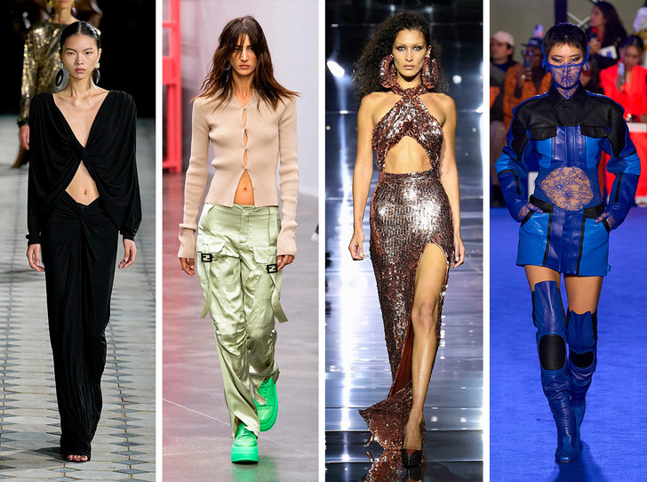

Кожаное платье, которое появилось чуть ли ни в каждой второй коллекции.
Креативные директора брендов показали свои версии этого предмета гардероба, поработав с кроем и силуэтом.
Среди новинок можно найти модели на одно плечо, приталенного кроя без бретелей, платья-футболки с принтом и двухцветные вариации.
Кожаное платье всегда смотрится эффектно и дорого, а потому такой предмет гардероба можно считать выгодной и важной покупкой через полгода или уже сейчас
Бельевая эстетика прочно вписалась в наши повседневные образы.
Этим летом мы дружно переоделись в корсеты, платья-комбинации и вовсе уже давно числятся в списке важных составляющих базового гардероба.
В весенне-летних линейках дизайнеры стали активно использовать кружево. Больше всего внимания досталось классическому черному:
чувственные платья и боди, дерзкие блузы и ажурная отделка на юбках и рубашках разнообразят повседневные луки.
Усмирить такие образы можно при помощи обуви на плоском ходу и спокойного макияжа.

Вернувшаяся в моду низкая посадка заставила многих модниц активнее ходить в зал.
Открытый живот — тренд и нового весенне-летнего периода. Но теперь это не только спущенные на бедра брюки и
джинсы на талии у платьев, но и открытые пуговицы кардиганов, а также разрезы у платьев и даже кожаных курток.
Подобный элемент помогает сделать образы более фактурными и интересными, а также усложняет даже самые простые луки.